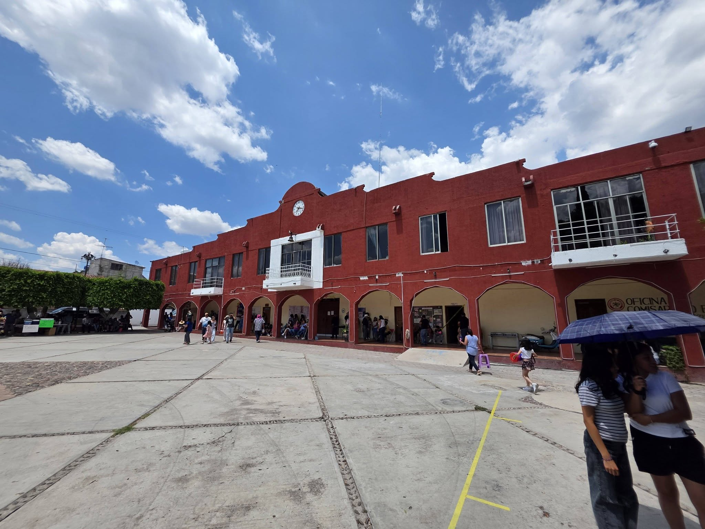

Esta página está dedicada a mostrar la belleza, las tradiciones y la calidez de Santiago Huajolotitlán. Explora nuestro sitio para conocer más sobre nuestra historia y nuestra gente.

¿Qué vas a encontrar aquí?
- Paisajes naturales increíbles de la Mixteca.
- La mejor gastronomía regional: mole y pan de yema.
- Tradiciones vivas como la fiesta de Santiago Apóstol.
¿Cómo llegar a Huajolotitlán?
Encuéntranos en la región de la Mixteca Baja, Oaxaca.
Ubicación exacta del Palacio Municipal y Centro Histórico.